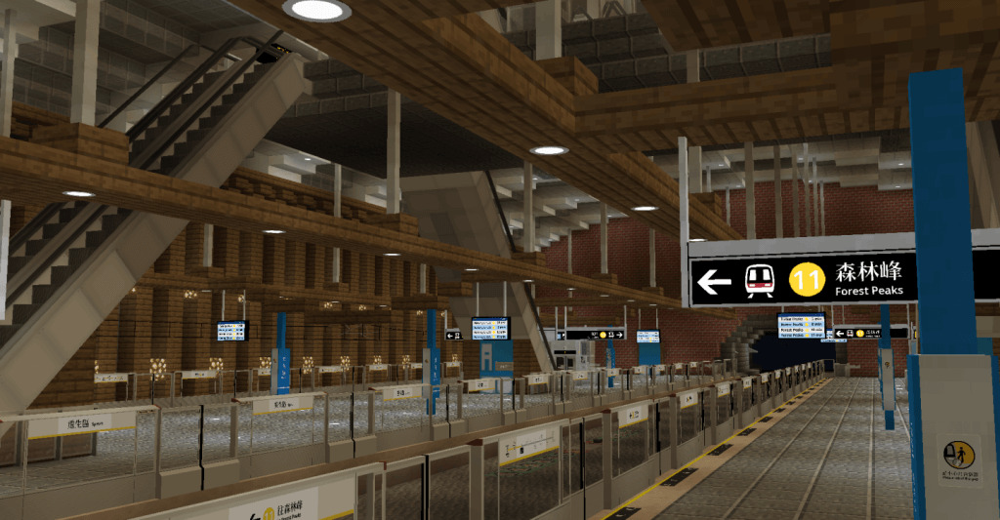
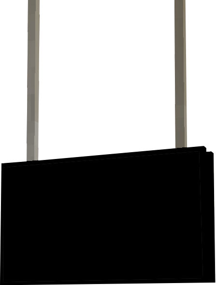
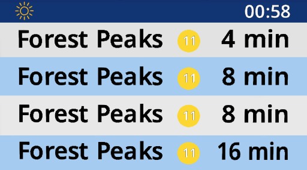
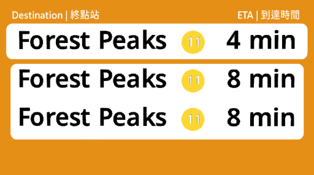
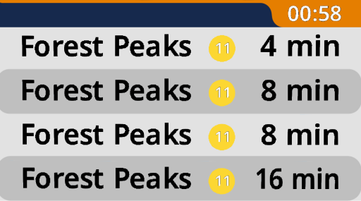
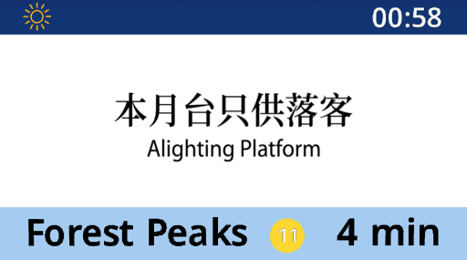
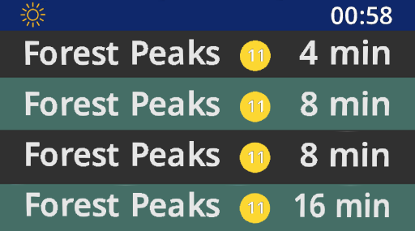
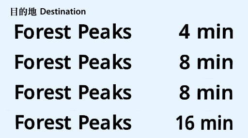
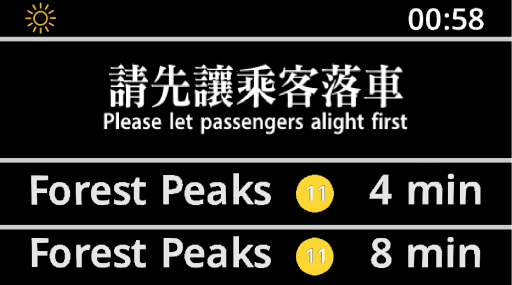

Comprehensive
With 50+ decoration blocks, NeoJCM offers one of the most complete set of railway facilities blocks ready to be used on your next build!
Your world, your way
From PIDS to Decoration Block, NeoJCM puts you in the control of how you want things to look and behaves.









Don't have NeoMTR yet?
NeoMTR is a Minecraft mod for building automated transit network, it is an unofficial derivative of the Minecraft Transit Railway 3.x mod
It works together with the NeoJCM to create a seamless experience between your Minecraft world and modern transportations.